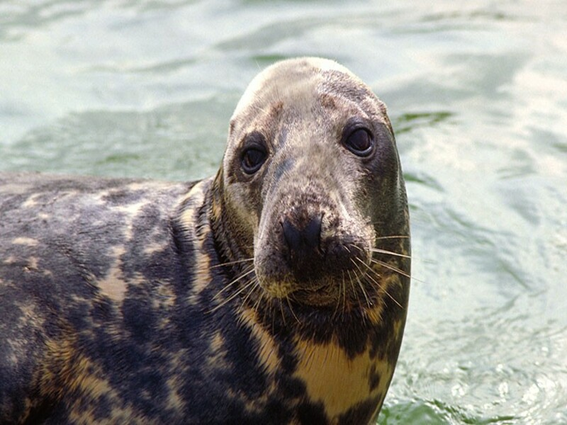
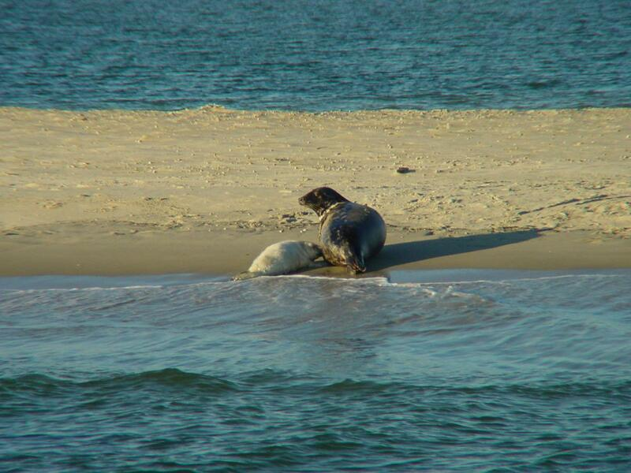

Voedsel en gedrag van de grijze zeehond
Voedsel
Grijze zeehonden eten voornamelijk vis als zalm, kabeljauw, schelvis, koolvis, zandspiering en platvissen, en schaal- en weekdieren. Ze eten soms inktvis en een enkele keer zelfs vogels, bruinvissen[2] en andere zeehonden.[3] Een deel van de strandingen van bruinvissen op de Noordzeestranden, is toe te schrijven aan dodelijke aanvallen van grijze zeehonden.[4][5] Gemiddeld eet een grijze zeehond 5,7 kilogram per dag, maar de dieren kunnen langere tijd zonder voedsel.
De grijze zeehond heeft een goed ontwikkeld zicht- en reukvermogen, waarmee ze hun prooidieren opsporen. Het dier kan tijdens het jagen tochten maken van wel honderd kilometer. Ze duiken meestal tot op een diepte van 25 meter, maar er zijn ook duiken waargenomen van wel 100 meter diep.
Voortplanting
De werptijd verschilt per regio. De grijze zeehonden van de Noordoostelijke Atlantische Oceaan werpen tussen september en december, met een geboortepiek in oktober. De zeehonden in de Noordwestelijke Atlantische Oceaan werpen voornamelijk in januari of februari. De paartijd volgt ongeveer drie weken na de werptijd.
In de paartijd vasten de dieren. Een mannetje eet dan zes weken lang niets. De dieren trekken naar vaste voortplantingsgebieden. Vrouwtjes zijn trouw aan hun voortplantingsgebied en keren ieder jaar terug naar dezelfde plek. Hier verzamelen de vrouwtjes zich in kolonies, die kunnen bestaan uit vijftig tot wel zeventigduizend vrouwtjes. Mannetjes houden een harem bij van vrouwtjes die (bijna) in oestrus zijn. Op land verdedigen de mannetjes hun harem tegen andere mannetjes. Als een vrouwtje in oestrus is, zal het mannetje haar geregeld dekken of aandacht schenken. Zo voorkomt hij dat andere mannetjes de kans krijgen om met het vrouwtje te paren. De paring vindt zowel op het land als in het water plaats, en duurt 15 tot 45 minuten. Dominante mannetjes hebben meestal het alleenrecht op paren, en kunnen andere mannetjes beletten te paren of zelfs uit de kolonie verjagen.
De totale draagtijd is 11,5 maand. De eigenlijke draagtijd duurt echter 8,5 maand, maar het embryo komt de eerste twaalf weken niet tot ontwikkeling (verlengde draagtijd).
Per worp krijgt het vrouwtje één jong. Jongen worden geboren op afgelegen stranden, onbewoonde eilanden, op pakijs en in grotten, boven de vloedlijn, in de kolonie. In noordelijke gebieden, als de Oostzee en rond Groenland, worden de jongen ook op het pakijs geboren. Vrouwtjes met jongen zijn zeer agressief tegen andere zeehonden. Vrouwtjes zonder jongen sluiten zich ook aan bij deze kolonies.
Bij de geboorte is het jong 90 tot 105 centimeter lang en 11 tot 20 (gemiddeld 14,5) kilogram zwaar. Het heeft bij de geboorte een wollige witte vacht. Deze verliest hij na 2 tot 3 weken. Het vrouwtje zoogt het jong om de vijf à zes uur. Door de vette melk komt het jong per dag 1,5 tot bijna 2 kilogram aan. De totale zoogtijd duurt 16 tot 21 dagen, waarna de moeder het jong verlaat. Pas als de jongen 30 tot 35 dagen oud zijn, gaan ze zelf naar voedsel zoeken.
Vrouwtjes zijn na 4 tot 5 jaar geslachtsrijp, mannetjes na 6 jaar. Mannetjes zullen echter meestal pas voor het eerst paren als ze 8 tot 10 jaar oud zijn.
Duikdiepte
De grijze zeehond kan erg diep duiken. Er zijn deskundigen die aangeven dat het gaat om een diepte van meer dan 145 meter en voor een periode van meer dan 20 minuten.